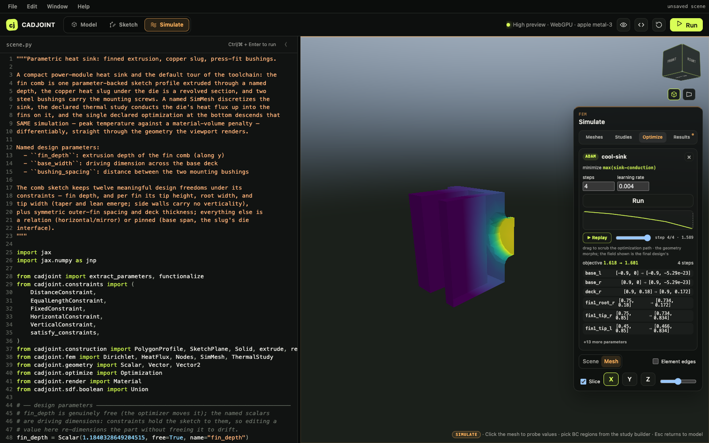

Optimization
Optimization is a declaration, not a loop you write. It names the thing being minimized, the parameters that may move, and how far the gradient has to travel to get there — and the viewer, the CLI, and a plain script all run the same object.
uv pip install optax # the optimizer; a fallback exists but Adam wants optaxTwo forms
An Optimization is declared one of two ways, and they are mutually exclusive.
The objective form minimizes any pure function of the free parameters of a piece of geometry. Nothing is simulated; this is the form for pure geometric targets.
import jax.numpy as jnp
from cadjoint.geometry.parameters import Vector
from cadjoint.optimize import Optimization
from cadjoint.sdf.primitives import Sphere
from cadjoint.sdf.transforms import Translate
p = Vector([1.0, 1.0, 0.0], free=True, name="p")
scene = Translate(Sphere(radius=0.5), offset=p)
def objective(params):
return jnp.sum(params["p"] ** 2)
run = Optimization(name="center", objective=objective, of=scene,
steps=40, learning_rate=0.1).run()
print(run.initial, "->", run.parameters)
# {'p': [1.0, 1.0, 0.0]} -> {'p': [0.1008, 0.1008, 0.0]}
print(run.history[0]["objective"], "->", run.objective) # 2.0 -> 0.0203The study form makes a declared ThermalStudy or ElasticStudy the objective. This is the form that runs the full differentiable chain: geometry → mesh → solve → scalar.
from cadjoint.fem import Dirichlet, HeatFlux, Nodes, SimMesh, ThermalStudy
from cadjoint.geometry.parameters import Vector
from cadjoint.optimize import Optimization
from cadjoint.sdf.primitives import Box
bar = Box(Vector([1.0, 0.15, 0.15], free=True, name="size"))
mesh = SimMesh(name="bar-mesh", resolution=(22, 5, 5),
bounds=(-1.1, -0.25, -0.25), size=(2.2, 0.5, 0.5))
study = ThermalStudy(
name="bar-conduction",
conductivity=2.0,
bcs=[Dirichlet(Nodes.side("+x"), 0.0), HeatFlux(Nodes.side("-x"), 4.0)],
mesh=mesh,
)
def volume(params):
s = params["size"]
return 8.0 * s[0] * s[1] * s[2]
run = Optimization(
name="cool-bar",
study=study,
metric="max",
regularizer=volume,
regularizer_weight=0.1,
steps=3,
learning_rate=0.01,
remesh_every=0,
).run(scene=bar)
print(run.history[0]["objective"], "->", run.objective) # 4.018 -> 2.964
print(run.parameters) # {'size': [0.970, 0.180, 0.179]}Three Adam steps thicken the bar and drop peak temperature from 4.018 to 2.964, against a volume penalty that stops it from simply growing without limit.
study= also accepts the name of a study, which is how scene files are written — but name resolution only works while a capture_studies() context is open, as it is when the playground executes a scene. In a standalone script, pass the study instance.
Mixing the forms is refused: metric, regularizer, remesh_every, and a non-direct gradient_path all belong to the study form, and objective / of are rejected alongside study.
The metric
metric reduces the solved field to one number.
metric |
Means |
|---|---|
"mean" |
The mean of the field — temperature, or displacement magnitude |
"max" |
Its maximum |
"compliance" |
The work of the applied loads, f·u (twice the strain energy) |
"compliance" requires an elastic study with at least one Traction boundary condition; without loads there is no work to compute, and the declaration is rejected rather than silently returning zero.
Choosing between mean and max is a modelling decision with teeth. The starter scene’s heat sink minimizes "max" deliberately: the die is the hot spot, and a mean-temperature objective degenerately rewards deleting hot material instead of cooling the chip.
regularizer is any function of the parameters added as objective + regularizer_weight * regularizer(params). It is a real reverse-mode path, not a penalty bolted on — in the starter scene it is a smoothed material volume computed by evaluating the traced SDF on a lattice.
Frozen topology
Meshing splits into a discrete half — which cells are inside, how they connect — and a continuous half, where the nodes sit. The discrete half cannot be differentiated. So the optimizer freezes topology and lets gradients flow through node positions only: each step re-projects the boundary nodes onto the current design’s zero set, Newton-corrected against the true SDF, with total motion clamped to half a cell diagonal.
That promise expires as the shape moves. remesh_every (default 6, 0 to never) re-extracts the mesh at the current design every so many steps. The small objective jumps at those steps are the discretization being refreshed, and they are not noise: on the bracket showcase the step-12 re-extraction raised the objective from 6.02 to 8.86 and the step-18 one lowered it from 7.99 to 5.53, because the web is only about two cells thick and a one-cell change in the loaded wall moves the discrete compliance substantially.
For the same reason the final reported number is always evaluated on a freshly extracted mesh, so it does not depend on whichever topology happened to be frozen last.
Gradient paths
gradient_path picks how far the derivative has to travel outside JAX.
| Value | Chain |
|---|---|
"direct" (default) |
Everything in-process. Node positions re-projected onto the true SDF, solved by the chosen backend. |
"tesseract" |
Lattice samples → mesher Tesseract → solver Tesseract. Meshes the trilinear interpolant, so the gradient carries only normal boundary motion. |
"tesseract-dc" |
Dual contouring stays in JAX on the true SDF; only TetGen is wrapped, by the tetfill Tesseract with its exact pass-through VJP. Tet meshes only. |
"tesseract-dc" is the sharp path — keeping dual contouring in JAX against the real field is what preserves fin creases — and it is what the starter scene declares. Both Tesseract paths need the tesseract extra. Whichever path runs the descent, the final result is evaluated on the direct path.
See Tesseracts for what each boundary costs and why it exists.
Constraints come along
Every update is projected back onto the constraint manifold. When extract_parameters reports a non-empty residual for the scene’s parameters, the optimizer chains a Newton projection onto the optimizer transform:
transform = optax.chain(optax.adam(learning_rate),
make_manifold_projection(metadata, steps=2))No flag turns this on. A constrained sketch stays a constrained sketch through the descent — horizontals stay horizontal, pinned dimensions stay pinned, and the optimizer moves only inside the freedom the sketch actually has.
Reading a run
run() returns an OptimizationRun:
history— one{"step", "objective", "grad_norm"}record per step, at the parameters before that step’s update. A non-finite objective or gradient norm aborts rather than propagating NaNs.trajectory—{"step", "objective", "parameters"}, subsampled to at most 100 entries with the first and last always kept. This is what the viewer’s scrubber replays.initialandparameters— before and after.objective— the final objective.result— the concreteSimulationResultfrom the final evaluation (study form only).
run(callback=fn) receives each history record as it is produced, which is how the playground streams progress. method is "adam" or "sgd"; without optax it degrades to plain gradient descent and reports "gradient-descent".
Study runs execute inside an x64 scope, promote parameters to float64, and restore the target’s original parameter values on exit — including on failure.

The full chain, measured
examples/fem_bracket_optimization.py runs the whole loop on the parametric L-bracket from scenes/bracket.py: three named CAD parameters (web_thickness, rib_height, plate_thickness) → bracket SDF → HEX8 mesh → linear elastic solve → compliance plus mass → Adam with box-bound projection.
uv run python examples/fem_bracket_optimization.py # ~10 min, CPU
uv run python examples/fem_bracket_optimization.py --smoke # 2 cheap steps
uv run python examples/fem_bracket_optimization.py --backend calculixOver 30 steps the objective falls 17.44 → 4.69, a 73% reduction; compliance drops 81% while mass rises 27%. The adjoint is validated against central differences at the initial design to 2.3e-5, 2.0e-3, and 3.3e-7 relative on the three parameters. --backend calculix swaps a 1990s Fortran code into the same jax.grad call without changing a line of the objective. Convergence CSV, a figure, and before/after VTK files land in examples/output/.
Further reading
- End-to-end optimization — the measured bracket run record, box-bound rationale, and a known CalculiX deck fragility.
- Simulation — declaring the study this minimizes.
- Tesseracts — the boundaries
gradient_pathcrosses.